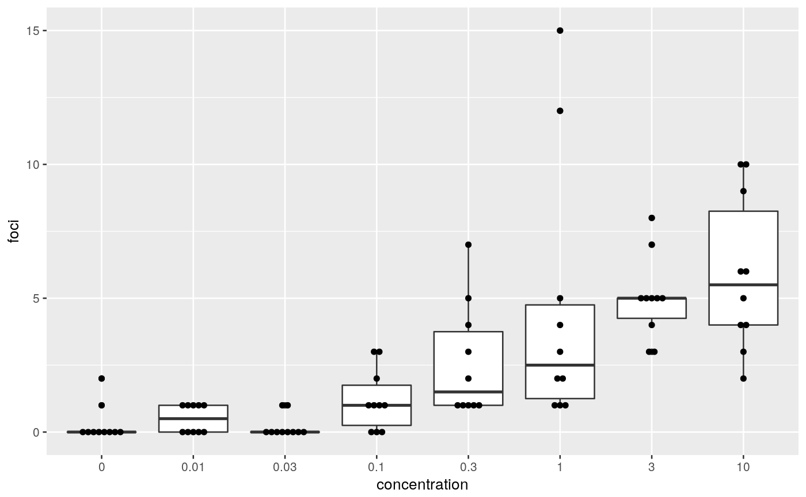
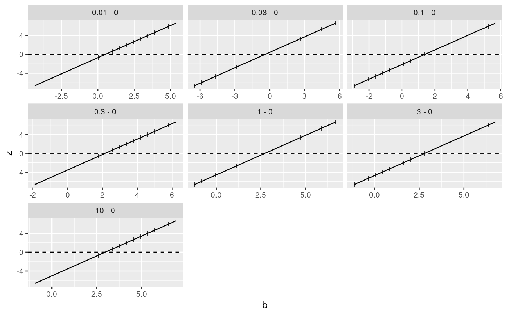

Transforms a signed root deviance profile of a mcprofile object into a profile of Wald-type statistics
wald(object)
| object | An object of class mcprofile |
|---|
An object of class mcprofile with a wald profile in the srdp slot.
####################################### ## cell transformation assay example ## ####################################### str(cta)#> 'data.frame': 80 obs. of 2 variables: #> $ conc: num 0 0 0 0 0 0 0 0 0 0 ... #> $ foci: int 0 1 0 0 0 0 0 0 0 2 ...## change class of cta$conc into factor cta$concf <- factor(cta$conc, levels=unique(cta$conc)) ggplot(cta, aes(y=foci, x=concf)) + geom_boxplot() + geom_dotplot(binaxis = "y", stackdir = "center", binwidth = 0.2) + xlab("concentration")# glm fit assuming a Poisson distribution for foci counts # parameter estimation on the log link # removing the intercept fm <- glm(foci ~ concf-1, data=cta, family=poisson(link="log")) ### Comparing each dose to the control by Dunnett-type comparisons # Constructing contrast matrix library(multcomp) CM <- contrMat(table(cta$concf), type="Dunnett") # calculating signed root deviance profiles (dmcp <- mcprofile(fm, CM))#> #> Multiple Contrast Profiles #> #> Estimate Std.err #> 0.01 - 0 0.511 0.730 #> 0.03 - 0 -0.405 0.913 #> 0.1 - 0 1.386 0.645 #> 0.3 - 0 2.159 0.610 #> 1 - 0 2.730 0.596 #> 3 - 0 2.813 0.594 #> 10 - 0 2.979 0.592 #># computing profiles for the modified likelihood root wp <- wald(dmcp) plot(wp)# comparing confidence intervals confint(wp)#> #> mcprofile - Confidence Intervals #> #> level: 0.95 #> adjustment: single-step #> #> Estimate lower upper #> 0.01 - 0 0.511 -1.269 2.29 #> 0.03 - 0 -0.405 -2.630 1.82 #> 0.1 - 0 1.386 -0.187 2.96 #> 0.3 - 0 2.159 0.673 3.65 #> 1 - 0 2.730 1.278 4.18 #> 3 - 0 2.813 1.365 4.26 #> 10 - 0 2.979 1.536 4.42 #>confint(dmcp)#> #> mcprofile - Confidence Intervals #> #> level: 0.95 #> adjustment: single-step #> #> Estimate lower upper #> 0.01 - 0 0.511 -1.2495 2.56 #> 0.03 - 0 -0.405 -3.0528 1.87 #> 0.1 - 0 1.386 -0.0177 3.31 #> 0.3 - 0 2.159 0.8957 4.04 #> 1 - 0 2.730 1.5191 4.59 #> 3 - 0 2.813 1.6080 4.67 #> 10 - 0 2.979 1.7832 4.83 #>